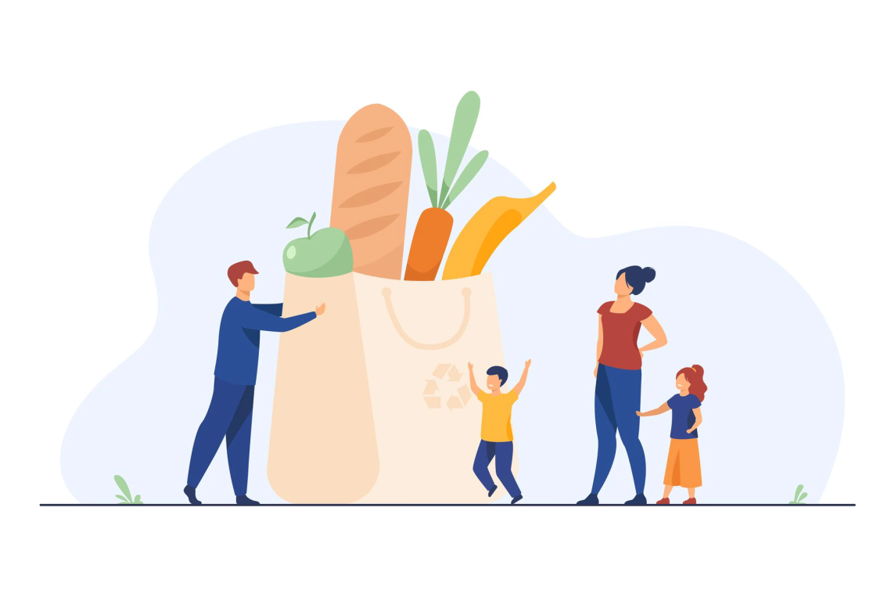
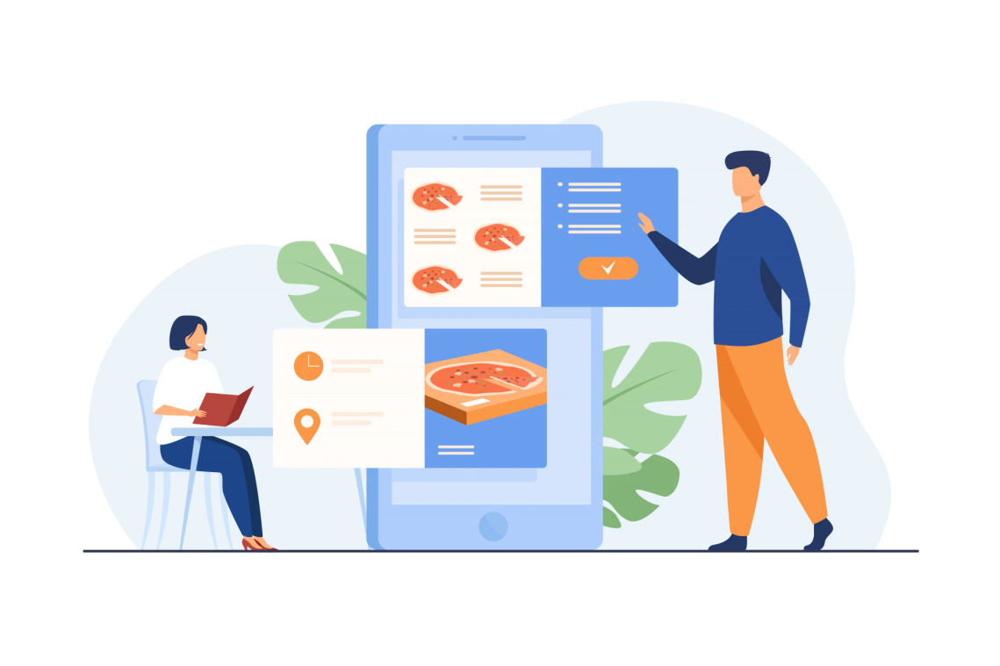
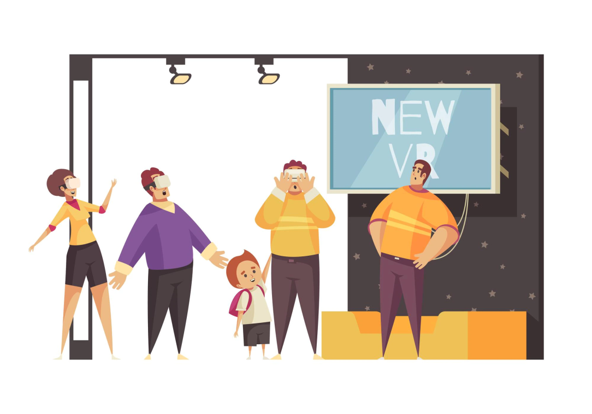

La FoodTech
Présentation de ma veille
Qu’est ce qu’une veille ?
La veille technologique consiste à surveiller les évolutions techniques, les innovations dans un secteur d’activité donné. La veille technologique comprend notamment la surveillance, la collecte, le partage et la diffusion d’information dans le but de les analyser et ainsi faire apparaitre des tendances et des corrélations. L’analyse des données collectées permet d’anticiper et de s’informer sur les changements en matière de recherche et développement.
Comment j’ai fait ma veille :
J’ai décidé de faire ma veille sans la méthode push ni (flux RSS): De manière à me renseigner naturellement sur un secteur pour lequel je porte un intérêt appuyé. Les outils tels que Feedly qui permettent de récolter un grand nombre d’information, ont, à mon gout un risque de submersion, de l’information. La veille active prend certes plus de temps, cependant le fait de travailler au quotidien dans le secteur de la Food-Tech m’a permis de me renseigner sur celui-ci.
Dans un premier temps à travers les réseaux sociaux
Plus particulièrement Linkedin, la plateforme contient énormément d’informations sur le marché, en s’abonnant aux acteurs qui le compose et en suivant les tags qui y sont associé #FoodTech #FinTech, ou bien d’autre. J’ai pu me tenir informé des événements tels que les dernières levés de fonds, les rachats, les partenariats, ou même l’émergence de nouvelles considéréeLicornes française Ces derniers mois ont été riches en échange. En effet j’ai pu rencontrer et échanger de plus ou moins loin avec de grands acteurs de la Tech, en commençant par Sébastien Caron (fondateur de Mapster), Olivier Mottes (Conseillé finance et Senior Adviser chez 50 Partners, un fond d’investissement), Olivia Mottes, ancienne employée chez Sundayapp (Licorne française ayant levé 100 millions de dollars) ou encore Quentin Vacher (CEO de Frichtea)..
Je me suis également rendu dans plusieurs salons
Le salon « Food Hotel Tech à Paris les 7 et 8 juin 2022 » J’y ai rencontré restaurateurs et Start-Up proposant des solutions plus innovantes les unes que les autres, j’ai également assisté à plusieurs conférences, dont une évoquant l’évolution des habitudes des consommateurs en restauration. Avec Victor Lugger, CEO Sunday, Kevin Mauffrey, Directeur commercial Deliveroo et Thierry Veil, co-fondateur de Bagelstein, modérée par Sabine Durand
Durant cet échange ils s’exprimèrent sur la difficulté de répondre aux besoin du consommateurs français constamment insatisfait et ayant des attentes très élevées rendant alors leurs satisfactions plus difficiles. Avant d’expliquer comment la pandémie à toucher le secteur de la restauration puis comment la food tech à sauver le secteur de la restauration grâce à des plateformes comme UberEat ou Deliveroo. L’échange fut court, mais riche en informations.
Plus d’informations dans cet article
La Vivatech le plus gros salon Tech d'Europe,du 15 au 18 juin 2022 durant lequel j’ai pu voir de nombreuses innovations de la technologie.
Définition de la Food Tech

Les professionnels parlent de technologie alimentaire ou « Dood Technology » en anglais. Il s’agit d’un nouveau type de commerce issu de l’alliance des nouvelles technologies et du secteur de l’alimentation. Une définition officielle n’existe pas vraiment. Pour le moment, on peut définir la foodtech comme l’écosystème constitué de tous les entrepreneurs et start-up se servant de la technologie pour améliorer ou faciliter la production et la distribution alimentaire.
la « Food Tech est une innovation sur toute la chaîne de valeur des aliments, de la ferme à l’assiette, en passant par la production, le transport, la transformation, la distribution, la consommation et le recyclage ».
Nadia El Hadery, fondatrice de YFood
La FoodTech est l’ensemble des entrepreneurs et des Start-ups du domaine alimentaire (de la production au consommateur final) qui innovent sur les produits, la distribution, le marché ou le modèle économique.
La Foodtech est un domaine en plein essor qui utilise les technologies de l'information et de la communication pour améliorer la façon dont nous produisons, achetons et consommons de la nourriture. Les avancées technologiques ont permis la création de nouveaux modèles d'affaires et ont changé la façon dont les consommateurs interagissent avec la nourriture.
Voici quelques tendances clés dans le domaine de la Foodtech :
La livraison de nourriture: La livraison de nourriture est devenue un marché de plusieurs milliards de dollars, alimenté par des entreprises telles que Uber Eats, Grubhub et DoorDash. Ces entreprises ont simplifié le processus de commande de nourriture en ligne et ont permis aux consommateurs de commander des repas de leurs restaurants préférés et de se faire livrer à leur domicile ou à leur bureau.
Les aliments à base de plantes : Les aliments à base de plantes gagnent rapidement en popularité, grâce à leur potentiel pour répondre aux préoccupations environnementales et de santé. Les entreprises comme Beyond Meat et Impossible Foods ont développé des alternatives à la viande qui imitent la texture et le goût de la viande tout en étant entièrement à base de plantes.
Les applications de cuisine : Les applications de cuisine telles que Cookpad et Yummly permettent aux utilisateurs de trouver des recettes, de planifier des repas et de créer des listes d'achats en ligne. Certaines applications permettent même aux utilisateurs de scanner des ingrédients pour trouver des recettes adaptées à ce qu'ils ont déjà dans leur réfrigérateur.
La traçabilité des aliments : La traçabilité des aliments est une préoccupation croissante pour les consommateurs, qui souhaitent savoir d'où vient leur nourriture et comment elle a été produite. Les technologies telles que la blockchain et l'Internet des objets sont utilisées pour suivre les produits alimentaires tout au long de la chaîne d'approvisionnement, de la ferme à la table.
La réduction du gaspillage alimentaire : Le gaspillage alimentaire est un problème majeur dans le monde entier, mais les technologies de la Foodtech peuvent aider à le résoudre. Les applications telles que Too Good To Go et Karma permettent aux consommateurs d'acheter des aliments invendus à des prix réduits, tandis que les entreprises comme Winnow développent des systèmes de surveillance de la nourriture pour aider les chefs à identifier les sources de gaspillage.
En conclusion, la Foodtech est un domaine en constante évolution qui offre de nombreuses opportunités pour les entreprises et les entrepreneurs. Les tendances clés incluent la livraison de nourriture, les aliments à base de plantes, les applications de cuisine, la traçabilité des aliments et la réduction du gaspillage alimentaire. Les consommateurs cherchent de plus en plus à être en phase avec leur santé et l'environnement et la Foodtech leur offre des solutions qui répondent à ces préoccupations.
La Foodtech est l’alliance entre le secteur de l’alimentation et de la restauration avec les nouvelles technologies.
Il n’existe pas réellement de définition plus juste que les autres, pour résumer on peut dire que La FoodTech représente toutes les start-ups qui mettent les nouvelles technologies au service de l’alimentation.
La food tech se divise en plusieurs sous sections ….
Il s’agit d’un secteur en plein expansion… (depuis 2014 en effet nous sommes passé de 32 M€ à prés de 400M€ investi avant le covid)
Mon intérêt pour la food tech
Cela fait maintenant 2 ans que je travail dans ce milieu avec SpinforEat, qui est le projet pour lequel je m'investi et me motive à devenir DA. Le choix de ma veille s'est donc effectué tout naturellement, il s'agit d'un marché que je trouve trés intéressant